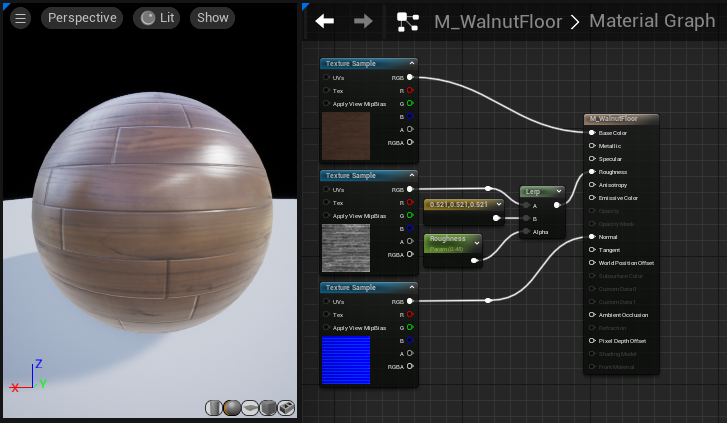

Materials and shaders
A shader performs rendering calculations; a material defines surface logic and settings; textures can supply some of its inputs.
Start with the roles
A shader is a program used in rendering. It receives inputs, performs calculations, and produces outputs. In Unreal, you usually describe a surface through a Material graph and its settings. Unreal turns those descriptions into the rendering programs it needs.
A texture supplies sampled values. A material can also use constants, adjustable parameters, or values calculated from coordinates and time. You can make a material using only a constant color and roughness value. An image file is optional.

The process is a set of relationships
| Relationship | What to follow |
|---|---|
| Coordinates guide sampling | UVs say where a texture sample reads. |
| Values feed surface logic | Samples, constants, and parameters connect through operations to material inputs. |
| Settings select behavior | Blend mode and other material settings govern how the surface participates in rendering. |
| Assignment selects the surface definition | A mesh region uses a Material or Material Instance through its assignment. |
| Rendering produces the image | The system uses the asset information with geometry, lighting, camera, and display processing. |
Keep the final rendering stage as one box in Week 2. Texture pixels do not simply become part of a one-time shader-compilation step. The system still samples and uses data when it renders.
Recognize a few inputs
- Base Color: supplies surface color information. It is not the final lit pixel.
- Roughness: describes variation relevant to the width and sharpness of surface reflections. Compare it under fixed lighting.
- Normal: supplies directions used in surface shading. See normals.
- Opacity / Opacity Mask: participate in coverage or transparency through the selected material setup.
These are starting points. The available inputs depend on the chosen material configuration. Follow Epic's Material Inputs reference when inspecting a specific graph.
Material Instances
A Material Instance inherits from a parent and can override exposed parameters. This gives an artist controls without duplicating every part of the graph. An ordinary color, scalar, or texture parameter is different from a static choice that can affect shader variants. See Epic's instance guide.
Try predicting which object changes before editing an instance. Then inspect which asset each object's slot references. A shared material or instance can affect more than the selected actor.
Alpha is data; blend mode gives it a role
An alpha channel does not automatically make a surface transparent. The material must connect and interpret that data appropriately.
| Mode | Beginner distinction |
|---|---|
| Opaque | Draw an opaque surface. |
| Masked | Keep or discard samples using a cutoff. |
| Translucent | Support partial transparency through the chosen setup. |
Two Sided is a separate backface-rendering decision. A visible cutout does not delete mesh triangles or collision. Compare the modes using the same geometry and image, then change only the mask cutoff. Epic's blend-mode examples show the relevant distinctions.
Lab questions
Is the intended region using the correct material? Does the graph sample the intended texture and coordinates? Does the texture's role agree with its interpretation? Which single change would distinguish these possibilities?
Continue with Maya-to-Unreal handoffs or the reading library for shader implementation and physically based surface models.